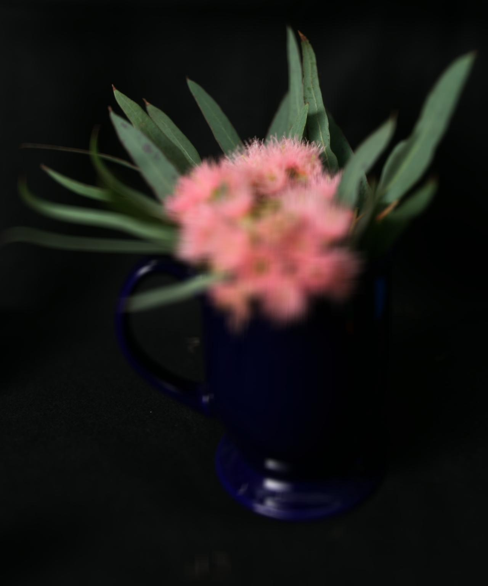
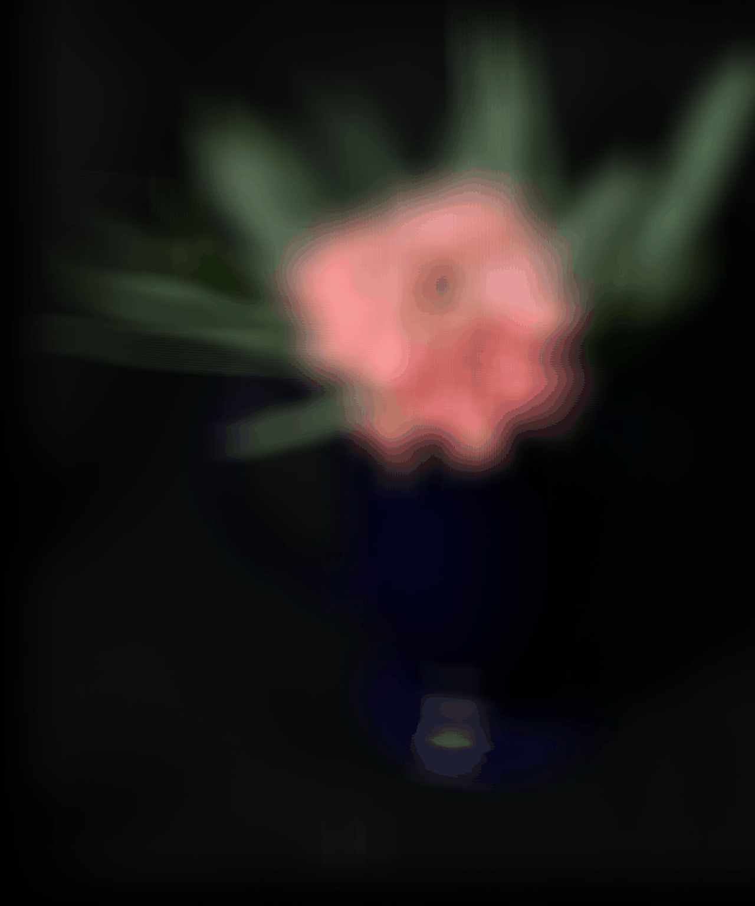

I inserted a synthetic cube onto an existing video with a predifined coordinate system.
I first selected correspondance points at the corners of the grid I drew on the box. Then, I used a CSRT tracker from the cv module to track these points across each frame.
After getting these 2d points and the known 3d coordinates, I was able to find the camera projection matrix for each frame. With the corners of the cube I desired, I then turned these 3d points into the image coordinates and drew the cube in each frame.
I inserted my own mesh into the video using Pyrender. I first broked the projection matrix into the intrinsic and extrinsic matrices, then rendered a triangular mesh found online. To add this back into our video, I added the rendered image into each frame.
Conventional cameras have the one downside of not being focused in all areas. Objects not in the depth of focus at the lens are unfocused, resulting in images similar to the iPhone's Portrait mode. Using the Stanford Lightfield Archive, I took images taken over a 17x17 grid to change the focus value at different depths.

In order to focus the image at different locations, I had to shift the images to the correct location and then averaged them.

To mimic a lens with a smaller aperture, I used the same approach of averaging images as in part 1, but used fewer images. Here, I used 1/4th of the images, skipping over every other grid coordinage.
I thought it was interesting how each level of "closeness" you got to the image was a different focus- it shows how cameras take in light, and similarly, how our eyes. I think it would be interesting to explore how we change focus without moving, and how we could combine those images!